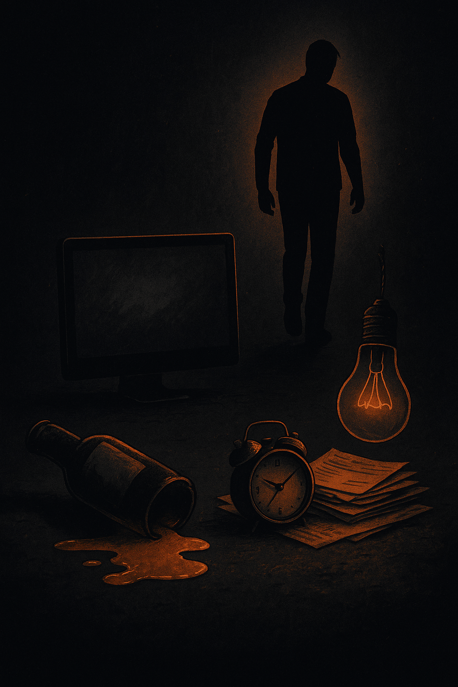

Chlap a závislosti
Když tě ovládá alkohol, porno nebo práce

Život je maraton, ne sprint. Jenže co se stane, když se z maratonu stane honba za jednou jedinou věcí, která ti na chvíli uleví? Když se tvůj svět smrskne do jedné lahve, jednoho monitoru nebo jedné kanceláře? To je závislost – okamžik, kdy se něco, co mělo být tvůj sluha, stane tvým pánem. A chlapi mají v tomhle často nevýhodu. Umíme držet, vydržet, zatnout se. Jenže ta samá schopnost, co nás dělá tvrdými, nás dokáže i pomalu zabít. Protože držíme i tam, kde bychom měli pustit.
Závislost není jen o látkách. Je to únik. Únik z reality, ze stresu, z pocitu prázdnoty nebo ze strachu, že nejsme dost. A právě proto je tak zrádná – protože chvíli funguje. Vypne hlavu, otupí hrany, uklidní. Jenže vždycky si vezme víc, než dá. A než to zjistíš, už to není volba. Už je to rutina. Smyčka, co tě ovládá.
Alkohol: tichý společník, co ti krade zítřek
Začíná to nenápadně. Pivo po práci, sklenka vína u večeře, panák na oslavu. Všechno vypadá normálně, dokud si nevšimneš, že z „někdy“ se stalo „pořád“. Ráno tě bolí hlava, spánek nestojí za nic, nervy máš na vlásku a výmluvy se kupí. A nejhorší? Přestáváš být doma přítomný. Sedíš u stolu, ale jsi pryč. Partnerka to vidí, děti to cítí. Alkohol není jen jed pro tělo. Je to jed pro vztah, pro tvoji důvěryhodnost, pro tvoji sílu.
Pravda je tvrdá: alkohol ti vezme víc než přinese. Můžeš se tvářit, že to máš pod kontrolou, ale pokud potřebuješ panáka, aby ses uvolnil, nejsi pánem ty. Je to jednoduché – chceš zjistit, kde jsi? Dej si tři týdny úplnou nulu. Pokud ti to přijde nemožné, odpověď už máš.
Porno: svět fantazie, co ti krade realitu
Porno je nejdostupnější droga dneška. Anonymní, rychlé, vždy po ruce. Začíná to jako zvědavost, končí jako denní rutina. A výsledek? Ztrácíš chuť na skutečný sex, ztrácíš blízkost s partnerkou, vztah chladne. Mozek si zvyká na nerealistické obrazy a skutečná intimita mu pak připadá „málo“. Nejde jen o sex. Jde o to, že tě to izoluje, dělá tě prázdnějším a osamělejším.
Pokud se přistihneš, že místo spánku koukáš na videa a ráno jsi vycucaný, pokud se vyhýbáš partnerce a schováváš se, je čas zatáhnout za brzdu. Dej si čtrnáct dní stop. Bez výjimek. Vymaž záložky, odinstaluj aplikace, telefon nech mimo ložnici. A když přijde chuť? Nečekej, až tě to semele. Vstaň, dej si dvacet dřepů, studenou vodu na obličej, projdi se. Nepřemýšlej. Hni se. Tělo přeruší smyčku rychleji než hlava.
Práce: závislost v obleku
Práce je nejlépe maskovaná droga. Dostaneš za ni potlesk, obdiv, peníze. A tak si dlouho namlouváš, že je to v pořádku. Jenže jestli se tvoje dny mění na nekonečné směny, jestli domů nosíš jen unavené mlčení a stres, jestli už neumíš vypnout ani na dovolené, pak tě práce neživí. Požírá tě. Zvenku to vypadá jako disciplína. Uvnitř je to únik. A únik je vždycky past.
Chceš test? Podívej se na kalendář. Kolik víkendů jsi obětoval za poslední rok? Kolik večerů jsi doma nebyl, i když jsi tam fyzicky seděl? Pokud je odpověď „moc“, přiznej si to. A nastav si hranice. Konec práce ve stanovený čas, notebook mimo ložnici, tři klíčové úkoly denně a hotovo. Zbytek je bonus, ne povinnost. A každý den jedno „ne“. Jinak tě práce sežere dřív, než si toho všimneš.
Jak poznáš, že už to není sranda
Závislost je zrádná právě v tom, že dlouho vypadá jako nevinný zvyk. Ale signály jsou jasné: lžeš o tom, co děláš. Schováváš lahve, tajíš videa, zůstáváš v kanceláři „protože musíš“. Izoluješ se od lidí, kteří ti řeknou, že je to špatně. Cítíš vinu, ale stejně to zopakuješ. A hlavně – tvůj život se začne zužovat. Méně přátel, méně radosti, méně energie.
Pokud se v tom poznáváš, není to důvod k hanbě. Je to důvod jednat. Nečekej, že se to zlepší samo. Nezlepší. Věci, které tě ovládají, mají jediný cíl – udržet tě tam, kde jsi. Musíš se rozhodnout, že to utneš ty.
Cesta ven: žádný zázrak, ale návrat k sobě
První krok je přiznat si pravdu. Ne „možná mám problém“. Ale „tohle mě ovládá“. To není slabost. To je síla. Protože chlapi, co to nepřiznají, v tom zůstanou až do konce. Ty to můžeš zlomit. Ne tím, že budeš čekat na ideální moment, ale tím, že uděláš první krok dnes.
Začni malými úkoly. Dej si čtrnáct dní restart. Žádný alkohol, žádné porno, pracuj jen pevně stanovenou dobu. Každé ráno si napiš tři věty: za co nesu odpovědnost, co dnes udělám první, co určitě neudělám. Večer další tři věty: co jsem splnil, kde jsem uhnul z cesty a co zítra změním. Nepotřebuješ román. Potřebuješ pravdu na papíře. A k tomu pohyb. Tělo je nejlepší páka na hlavu. Dělej dřepy, kliky, projdi se a dobře spi. Funguje to líp než všechny výmluvy.
Až přijde chuť spadnout zpátky, měj připravenou „záchrannou cihlu“ – malý úkol, který zabere pět minut a posune tě. Zavolej, přišroubuj, napiš odstavec, slož prádlo. Je to směšné? Možná. Ale přesně tyhle drobnosti ti nedovolí vrátit se zpět.
Závěr: disciplína jako svoboda
Závislosti ti berou svobodu, protože ti diktují, co budeš dělat. Jediný způsob, jak ji získat zpět, je nastavit si hranice. Ne jako vězení. Ale jako plot, který chrání zahradu, na které makáš. Alkohol, porno, práce – všechno může být dobrý sluha. Ale jakmile se z toho stane pán, je konec.
Nečekej na dno. Nemusíš tam spadnout, abys začal lézt nahoru. Stačí si to přiznat a začít dnes. Zítra znova. Každý den. Malé kroky, velké výsledky. Disciplína není o omezování. Je to o tom, že si vezmeš volant zpátky a rozhodneš se, kam pojedeš. A to je svoboda, kterou ti žádná lahev, žádné video ani žádná kancelář nikdy nedá.